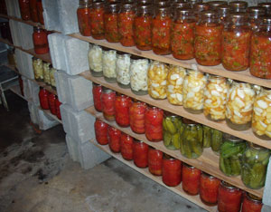

MARY LOU SHAW
Canned food, stored in the basement, is just one method of preserving food for the winter. You can preserve apples, pickles, vegetable blends, whole tomatoes and tomato juice by canning.